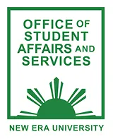
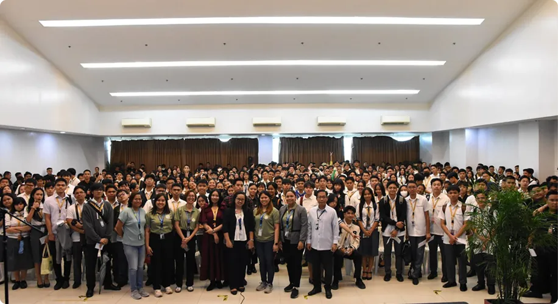
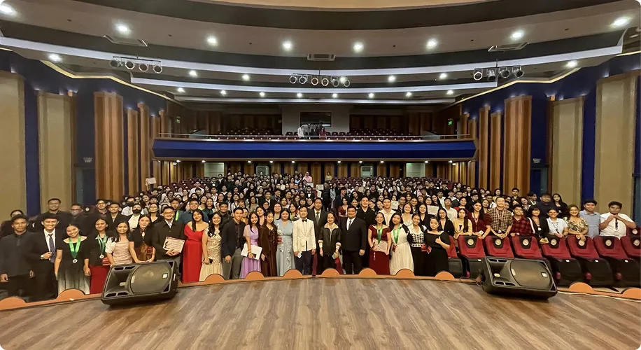
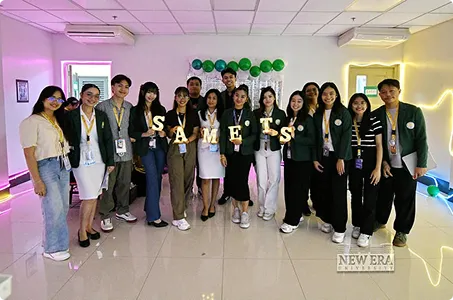
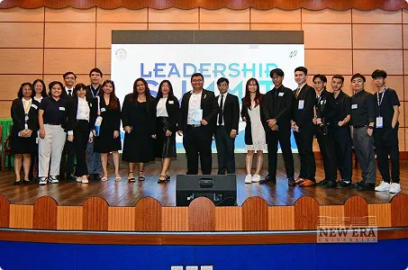
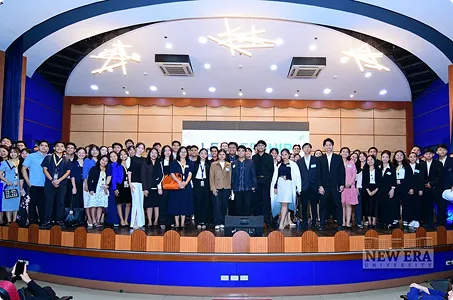
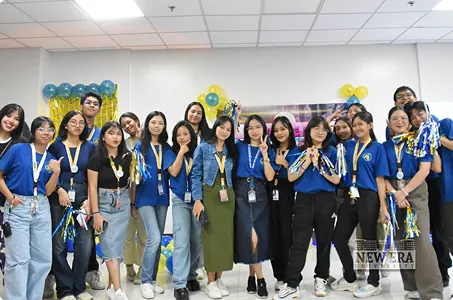
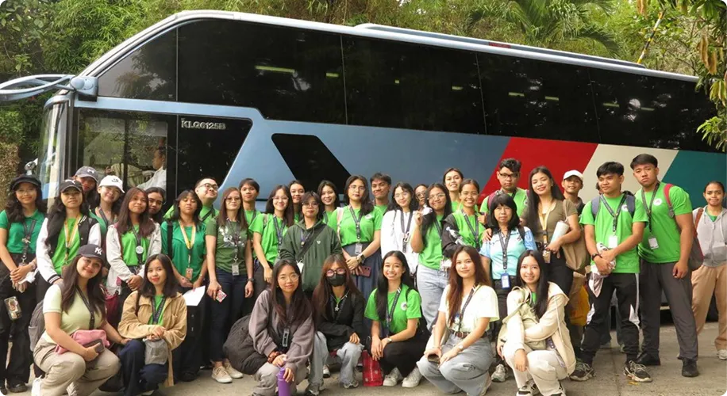
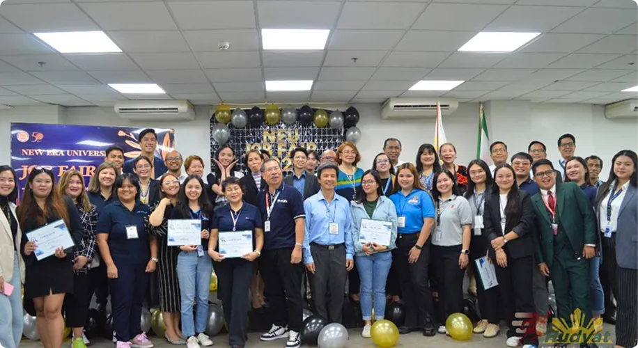

OFFICE OF STUDENT AFFAIRS AND SERVICES
VISION
To cultivate a student body that embodies a Christian character, academic distinction, and a commitment to service, reflecting our unique Christian culture.
MISSION
The Office of Student Affairs and Services is dedicated to nurturing the holistic development of students, fostering an environment where "Godliness is the Foundation of Knowledge" by providing Christ-centered programs and services that uphold the university's mission of delivering quality education anchored on Christian values, ultimately bringing honor and glory to God.
GOALS
- Integrate Christian Values: Embed Christian principles and biblical teachings into all student programs and services.
- Foster Spiritual Growth: Provide opportunities for students to deepen their faith and develop a personal relationship with God.
- Promote Academic Excellence: Support student success through resources and guidance that align with the university's commitment to quality education.
- Develop Servant Leaders: Equip students with the skills and heart for service to humanity, both within and outside the university community.
- Cultivate a Culture of Discipline: Instill in students the importance of self-control, accountability, and ethical conduct.
- Enhance Student Well-being: Offer comprehensive support systems that address the physical, emotional, and social needs of students in a Christ-centered manner.
- Build Community: Create a vibrant and inclusive campus environment that fosters strong relationships and a sense of belonging among students.
- Uphold University Standards: Ensure all student activities and behaviors align with the university's vision of excellence and Christian culture.


SERVICES
The Office of Student Affairs and Services (OSAS) provides a comprehensive array of services designed to foster the holistic development of students, ensuring their well-being, growth in Christian character, and preparedness for a life of purpose, always upholding that "Godliness is the Foundation of Knowledge" and ultimately bringing honor and glory to God.
Office of Student Discipline
This office is dedicated to upholding the university's unique Christian culture of excellence and discipline. It addresses student conduct matters, promoting a campus environment where Christian values guide behavior, ensuring fairness, accountability, and the spiritual formation of students through restorative approaches.
Guidance and Counseling Center
Rooted in the belief that every individual is fearfully and wonderfully made, the Guidance and Counseling Center offers Christ-centered counseling, psychological testing, and developmental programs. It supports students' personal, academic, and spiritual growth, helping them navigate challenges, discern God's will for their lives, and realize their full potential.
Central Student Council
The Central Student Council empowers students to develop leadership skills anchored on Christian principles. It serves as the primary representative body for the student voice, fostering active participation in campus life, organizing activities that promote brotherhood and service, and ensuring student initiatives align with the university's Christian values and mission.
National Service Training Program (NSTP)
In alignment with national mandates and the university's commitment to service to humanity, the NSTP instills civic consciousness and defense preparedness. Students engage in community-based activities (Civic Welfare Training Service), literacy instruction (Literacy Training Service), or military training (Reserve Officers' Training Corps), developing patriotism and a heart for serving the nation for the greater glory of God.
Office of Career Placement and Industry Linkages (OCPIL)
The OCPIL assists students in discerning their vocational callings and securing meaningful career opportunities that align with their skills and Christian values. It provides career guidance, job search assistance, internship placements, and industry connections, preparing graduates to excel professionally while embodying the university's culture of excellence and service in their chosen fields.
Student Organizations
Student Organizations provide avenues for students to explore diverse interests, develop talents, and build community, all within a framework that reinforces Christian values. These organizations offer opportunities for leadership, fellowship, and service, encouraging students to apply their knowledge and skills in ways that bring honor and glory to God while contributing to a vibrant campus life rooted in excellence and discipline.
Cafeteria Services
Committed to nurturing the holistic well-being of students, the Cafeteria Services provide nutritious, affordable, and hygienically prepared meals in a wholesome environment. This service supports student health and fosters a sense of community, recognizing that physical nourishment is essential for effective learning and spiritual growth, contributing to a disciplined and excellent student body.

OFFICE OF STUDENT DISCIPLINE
Established in 1975, the Office of Student Discipline (OSD) has been a foundational pillar in upholding the university's distinct identity as "a world-class Institution of learning with a unique Christian culture of excellence, discipline, and service to humanity." From its inception, the OSD has operated under the profound philosophy that "Godliness is the Foundation of Knowledge," recognizing that true intellectual and personal growth is inextricably linked to righteous living and moral integrity.
The OSD is tasked with the crucial responsibility of maintaining an orderly, safe, and morally upright campus environment that fosters the holistic development of every student. It is not merely an enforcement body, but a vital component in the university's mission to "provide quality education anchored on Christian values with the prime purpose of bringing honor and glory to God." This means the office approaches student conduct not as punitive measures alone, but as opportunities for spiritual formation, character building, and redemptive guidance.
Through the consistent and fair application of the university's Student Code of Conduct, the OSD addresses disciplinary matters with wisdom, compassion, and a commitment to biblical principles. It facilitates investigations, conducts hearings, and implements appropriate sanctions, always aiming to help students understand the consequences of their actions, learn from their mistakes, and grow in self-discipline and accountability. The office actively promotes a campus culture where respect, integrity, and responsibility are deeply ingrained, preparing students to live lives that reflect Christ-like character both within the university and as future servant-leaders in society. The OSD's work is ultimately dedicated to ensuring that every student's journey at the university is one that continually brings honor and glory to God through their conduct and character.
Vision
To cultivate a student body characterized by a Christian discipline, integrity, and accountability, reflecting the university's commitment to excellence and its unique Christian culture.
Mission
The Office of Student Discipline is dedicated to upholding the university's Christian values through the consistent and redemptive application of its code of conduct, fostering an environment where "Godliness is the Foundation of Knowledge" and students are guided towards behaviors that bring honor and glory to God, contributing to a world-class institution of learning.
Goals
- Uphold Christian Standards: Consistently enforce the university's code of conduct, ensuring all disciplinary actions are anchored in Christian values and biblical principles.
- Foster Self-Discipline: Guide students in developing personal responsibility and self-control, crucial components of a life dedicated to God.
- Promote Ethical Conduct: Educate students on ethical decision-making and the importance of integrity in all aspects of their lives.
- Ensure Fair Processes: Implement just, transparent, and redemptive disciplinary procedures that prioritize student formation over mere punishment.
- Cultivate Respectful Community: Contribute to a campus environment where mutual respect, accountability, and the dignity of every individual are paramount.
- Support Spiritual Growth: Utilize disciplinary interactions as opportunities to encourage reflection, repentance, and spiritual growth in students.
- Enhance Campus Order: Maintain an orderly and safe learning environment conducive to academic excellence and Christ-centered living.
- Glorify God in Action: Ensure that all disciplinary efforts ultimately reflect the university's purpose of bringing honor and glory to God through the character of its students.
Service Offerings
This office is dedicated to upholding the university's unique Christian culture of excellence and discipline. It addresses student conduct matters, promoting a campus environment where Christian values guide behavior, ensuring fairness, accountability, and the spiritual formation of students through restorative the following services:
- Formulates and recommends to the University Administration on policies on the conduct of the students.
- Implements the University Code of Student Discipline and recommends the appropriate disciplinary action against offenders to the proper University authorities.
- Monitors student behavior in community services projects, functions and other University approved activities.
- Serves as students' desk, and tasked to resolve/address students concerns.
GUIDANCE AND COUNSELING CENTER

The Guidance and Counseling Center (GCC) was formally established in 1975. Its founding was rooted in the university's profound philosophy that "Godliness is the Foundation of Knowledge," recognizing that true intellectual development must be intrinsically linked with spiritual and personal well-being. In its nascent years, the GCC primarily focused on providing fundamental personal counseling and academic advising, to ensure students' holistic growth beyond the classroom.
Throughout the 1980s and 1990s, as the university grew and the needs of its diverse student population evolved, the GCC expanded its services significantly. It began incorporating career guidance programs, developing structured group counseling sessions, and initiating proactive outreach activities. This period marked a deeper integration of Christian values into its methodologies, moving beyond basic support to actively fostering spiritual maturity and character development in students. The center became instrumental in upholding the university's mission to "provide quality education anchored on Christian values with the prime purpose of bringing honor and glory to God."
In the new millennium and up to the present, the GCC has transformed into a comprehensive and dynamic hub for student support. It has embraced modern counseling practices and proactive mental health initiatives while steadfastly maintaining its Christ-centered foundation. This evolution includes robust spiritual formation programs, sophisticated career readiness and placement services, and a more structured approach to crisis intervention and student well-being, aligning with the university's vision of fostering "a unique Christian culture of excellence, discipline, and service to humanity."
Vision
A Christian-centered, world-class Guidance and Counseling Center that fosters the holistic development of students for a life of excellence, discipline, and service to humanity.
Mission
To provide exemplary, Christian-centered guidance and counseling services that equip students with the necessary knowledge and skills for academic success, personal well-being, and spiritual maturity, all for the honor and glory of God.
Goals
- Comprehensive Support: Provide programs that address the academic, personal, social, and spiritual needs of all students.
- Mental Health Advocacy: Offer accessible and confidential individual and group counseling services to support student mental and emotional health.
- Career Readiness: Implement effective career guidance and placement services to prepare students for their professional and ministry callings.
- Community Partnerships: Foster strong partnerships with faculty, staff, and parents to create a supportive Christian community.
- Biblical Integration: Integrate biblical principles and spiritual formation into all guidance and counseling programs.
- Professional Excellence: Continuously enhance professional competency through ongoing training and research to ensure service excellence.
- Wellness Outreach: Develop and implement outreach programs that promote a culture of mental wellness and Christian values across the university.
- Continuous Improvement: Regularly assess and evaluate the effectiveness of all services to ensure continuous improvement and alignment with the university's mission.
Service Offerings
The Guidance and Counseling Center provides support to students in their academic, personal, social, and career development. It aims to help students achieve success in school and prepare them to be responsible members of society. The center offers a variety of services, including career guidance, counseling, and workshops:
- Career Guidance - The center organizes Career Guidance Week with activities like career matching, career parades, and seminars on goal setting.
- Counseling Services - Offers counseling for students facing issues like stress, depression, anxiety, and other personal challenges.
- Workshops and Seminars - The center collaborates with other departments and organizations to host seminars on topics like resilience, handling failure, and stress management.
- Community Programs - The center also participates in community outreach programs, often in collaboration with the College of Medicine and other departments.

THE CENTRAL STUDENT COUNCIL

The Central Student Council (CSC) is the highest student governing body of the university, established to represent the interests of the student population and to serve as a vital link between students and the administration. Rooted in the profound philosophy that "Godliness is the Foundation of Knowledge," the CSC operates with the unwavering belief that true wisdom and understanding originate from a relationship with God. This core principle guides every decision, initiative, and program undertaken by the Council.
Our existence is intricately woven with the university's main mission: "To provide quality education anchored on Christian values with the prime purpose of bringing honor and glory to God." We see ourselves as direct partners in fulfilling this mission by actively shaping a student environment where Christian values are not just taught but lived out daily. The CSC is dedicated to ensuring that the pursuit of academic excellence is always intertwined with spiritual growth, fostering an atmosphere where students can thrive intellectually while deepening their faith.
Furthermore, the CSC is committed to upholding the university's vision of being "A world-class Institution of learning with a unique Christian culture of excellence, discipline, and service to humanity." We believe that a "unique Christian culture" is cultivated through the intentional actions of its student body. The CSC strives to be at the forefront of this cultivation, promoting a culture of excellence in all endeavors, encouraging discipline in both academic and personal lives, and inspiring selfless service to humanity, all as expressions of God's love and grace.
Since its inception, the CSC has been instrumental in organizing events and implementing policies that reflect these foundational beliefs. From spiritual formation activities like praise and worship sessions and Bible studies, to academic support programs such as peer tutoring and study groups, and community outreach initiatives that embody servant leadership, the CSC endeavors to create well-rounded individuals who are not only academically proficient but also spiritually mature and socially responsible.
Vision
A Christian-centered student body actively demonstrating excellence, discipline, and service, reflecting God's glory in all pursuits of knowledge and leadership.
Mission
To nurture student leaders grounded in Christian values, providing quality programs and initiatives that foster academic excellence, spiritual growth, and dedicated service to the university and the wider community, all for the honor and glory of God.
Goals
- Promote Spiritual Formation: Organize and support activities that encourage students' spiritual growth and a deeper understanding of Christian values.
- Foster Academic Excellence: Develop initiatives that support students in achieving academic distinction, recognizing knowledge as a gift from God.
- Cultivate Servant Leadership: Equip student leaders with the skills and mindset to serve their peers and the community with humility and dedication.
- Strengthen University Community: Facilitate programs that build a cohesive and supportive university environment anchored in Christian fellowship.
- Encourage Responsible Citizenship: Inspire students to be active and responsible citizens, applying Christian principles to societal challenges.
- Champion Ethical Conduct: Uphold and advocate for the highest standards of integrity, honesty, and ethical behavior among students.
- Enhance Student Well-being: Support holistic student development, addressing intellectual, spiritual, physical, and emotional needs.
- Instill a Culture of Service: Create opportunities for students to engage in meaningful outreach and community service, reflecting God's love.
Service Offerings & Initiatives
The Central Student Council provides a variety of platforms for student representation and development, ensuring that every student initiative aligns with the university's core values:
- Student Representation - Acting as the primary voice of the student body in administrative dialogues and university policy discussions.
- Leadership Training - Organizing seminars and workshops focused on Christian leadership and organizational management.
- Student Activity Coordination - Overseeing university-wide events that promote camaraderie, excellence, and discipline.
- Grievance and Support Desk - Providing a dedicated channel for students to voice concerns and seek assistance regarding university life.
- Outreach and Fellowship - Coordinating community service projects and spiritual gatherings to strengthen the bond among students.
STUDENT ORGANIZATIONS
The Student Organizations of the University represent the diverse and dynamic landscape of student life within our institution. Each organization, while unique in its focus, operates under a unifying philosophy that "Godliness is the Foundation of Knowledge." This profound belief underscores that all intellectual pursuits and talents find their truest meaning and purpose when anchored in a relationship with God. It emphasizes that true understanding extends beyond academic proficiency to encompass wisdom, integrity, and spiritual insight.
Our collective existence is inextricably linked to the university's main mission: "To provide quality education anchored on Christian values with the prime purpose of bringing honor and glory to God." As individual student organizations, we are vital instruments in fulfilling this mission. Whether an academic club, a service group, a cultural society, or a spiritual fellowship, each organization is encouraged to integrate Christian values into its operations, programs, and member interactions. This ensures that every student's involvement contributes not only to their personal growth but also to the university's overarching goal of glorifying God.
Furthermore, the University Student Organizations are committed to embodying the university's vision of being "A world-class Institution of learning with a unique Christian culture of excellence, discipline, and service to humanity." We believe that the "unique Christian culture" is vibrantly expressed through the collective efforts and character of our student organizations. We champion excellence in every project, competition, and event, reflecting the highest standards in all our endeavors. We cultivate discipline in managing our resources, adhering to our principles, and committing to our goals. Most importantly, we are dedicated to fostering a spirit of service to humanity, understanding that our talents and resources are ultimately meant to bless others, demonstrating God's love in tangible ways.
Since their establishment, student organizations have been pivotal in enriching campus life and providing platforms for students to develop their skills, pursue their passions, and contribute to the community. They serve as crucibles for leadership development, character building, and the practical application of Christian values. The University Student Organizations are not merely extracurricular groups; they are active communities of faith and learning, united in their pursuit of knowledge, excellence, and service, all for the honor and glory of God.




List of Registered and Recognized Student Organizations
| College/Department | Student Organization Name |
|---|---|
| College of Arts and Sciences (Main Building) | CAS Lingkod Mag-aaral |
| College of Arts and Sciences (Main Building) | Economic Society |
| College of Arts and Sciences (Main Building) | New Era Biology Society |
| College of Arts and Sciences (Main Building) | New Era Political Science Society |
| College of Arts and Sciences (Main Building) | New Era Public Administration Society |
| College of Arts and Sciences (Main Building) | New Era Psychology Society |
| College of Arts and Sciences (Main Building) | New Era Psychology Group |
| College of Business Administration (SOM Building) | Student Council of Business Administration |
| College of Business Administration (SOM Building) | Human Resource Student Society |
| College of Business Administration (SOM Building) | Junior Finance Executive Association |
| College of Business Administration (SOM Building) | Junior Realtors Board |
| College of Business Administration (SOM Building) | Legal Management Organization |
| College of Business Administration (SOM Building) | New Era Junior Marketing Association |
| College of Business Administration (SOM Building) | Young Entrepreneurs Society |
| College of Communication (Main Building) | New Era Communicators |
| College of Informatics and Computing Studies (Main Building) | Computer Studies Student Council |
| College of Informatics and Computing Studies (Main Building) | Association of Computer Science Student |
| College of Informatics and Computing Studies (Main Building) | Multimedia and Entertainment Technology Association |
| College of Informatics and Computing Studies (Main Building) | Society of Information, Technology Student |
| College of Informatics and Computing Studies (Main Building) | Leaders in Information, Networks and Knowledge System |
| College of Criminology (Main Building) | NEU Criminology Student Society |
| College of Education (IS Building) | Educator's Alliance Developing on Optimum Service English Educator's Guild |
| College of Engineering and Architecture (Main Building) | Engineering Student Council |
| College of Engineering and Architecture (Main Building) | Association of Civil Engineering Students |
| College of Engineering and Architecture (Main Building) | Association of Electronics Engineering Students |
| College of Engineering and Architecture (Main Building) | Electrical Engineering League of Student Auxiliary |
| College of Engineering and Architecture (Main Building) | Industrial Engineering Society |
| College of Engineering and Architecture (Main Building) | United Architecture of the Philippines Students of Astronomy |
| College of Engineering and Architecture (Main Building) | Organization of New Era Students of Astronomy |
| College of Engineering and Architecture (Main Building) | Engineering Mathematics Science Council |
| College of Medical Technology (PSB) | Supreme Association of Medical Technology Students |
| College of Medicine (PSB) | Medicine Student Council |
| College of Nursing (PSB) | Nursing Student Council |
| College of Physical Therapy (PSB) | Physical Therapy Society |
| College of Respiratory Therapy (PSB) | Association of Respiratory Therapy Students |
| College of Music (IS Building) | Music Students Synergy |
| School of International Relations (SOM Building) | Junior Diplomats’ Circle |
| College of Law (PSB) | NEU College of Law Student Council |
| School of Graduates Studies Non-Academic | Central Student Council |
| School of Graduates Studies Non-Academic | Peer Facilitators Club |
| School of Graduates Studies Non-Academic | Dulaang Asilaw |
| School of Graduates Studies Non-Academic | Glee Club |
| School of Graduates Studies Non-Academic | NEU Male Chorale |
| School of Graduates Studies Non-Academic | NEU Integrated School Choir |
| School of Graduates Studies Non-Academic | New Era University Choir |
| School of Graduates Studies Non-Academic | New Era University Rondalla |
| School of Graduates Studies Non-Academic | New Era University Sign Language Club |
| School of Graduates Studies Non-Academic | Technology, Research and Innovation Council of Enthusiasts |
| School of Graduates Studies Non-Academic | Project Paradigm |
| School of Graduates Studies Non-Academic | New Era University Camera Club |
| School of Graduates Studies Non-Academic | Victory Club |

NATIONAL SERVICE TRAINING PROGRAM

The National Service Training Program (NSTP) at this institution is a mandatory program for all incoming college freshmen, established in compliance with Republic Act 9163, also known as the NSTP Act of 2001. This program is uniquely shaped by the foundational philosophy of "Godliness is the Foundation of Knowledge" and the university's overarching mission to "Provide quality education anchored on Christian values with the prime purpose of bringing honor and glory to God."
At its core, the NSTP aims to enhance civic consciousness and defense preparedness among students by developing their ethics of service and patriotism. While other institutions may focus solely on secular civic duties, this university's NSTP integrates a robust Christian worldview into every module. Concepts of community service, leadership, and national defense are taught through the lens of biblical principles, emphasizing love for God and neighbor, stewardship, and selfless service.
Program Components
Students must choose one of the following three distinct components to fulfill their service requirement:
- Civic Welfare Training Service (CWTS): Designed to engage students in activities contributing to the general welfare and betterment of the community. Projects focus on health, education, environment, safety, entrepreneurship, and ethics, framing service as an act of worship and stewardship over God's creation.
- Literacy Training Service (LTS): Focuses on training students to become facilitators of literacy and numeracy skills for out-of-school youth and children. This component highlights the Christian mandate to equip and empower the less fortunate through the sharing of knowledge.
- Reserve Officers' Training Corps (ROTC): Instills military education and training for national defense preparedness. Unlike purely secular programs, it integrates principles of righteous leadership and sacrificial service, reminding cadets that defense of the nation is a sacred duty performed with integrity.
Throughout all components, the curriculum emphasizes character formation rooted in Christian values. The program's success is measured by the holistic development of students into God-fearing, responsible, and engaged citizens committed to bringing honor and glory to God through their lives of service.
Vision
A Christian-centered, world-class National Service Training Program that cultivates excellence, discipline, and service to humanity, founded on the principle that Godliness is the Foundation of Knowledge.
Mission
To provide quality national service training anchored on Christian values, empowering students to become responsible citizens and leaders, with the prime purpose of bringing honor and glory to God through service to the nation and humanity.
Goals
- Instill Christian Values: To deeply integrate Christian principles and ethics into all aspects of civic and military education, fostering moral uprightness and integrity.
- Promote Civic Consciousness: To develop a profound understanding of civic duties and responsibilities, encouraging active participation in community development.
- Enhance Leadership and Discipline: To cultivate strong leadership qualities, self-discipline, and teamwork, preparing students to be agents of positive change.
- Foster National Pride: To instill a deep sense of patriotism and commitment to national welfare, inspiring dedicated service to the Philippines.
- Develop Practical Skills: To equip students with practical skills in disaster preparedness and community welfare, enabling them to respond effectively to societal needs.
- Encourage Volunteerism: To promote a spirit of selfless service, inspiring students to contribute actively to the well-being of their communities.
- Strengthen Spiritual Foundation: To reinforce the spiritual lives of students, connecting their service to a higher purpose and their faith.
- Produce God-fearing Citizens: To graduate students who are academically competent, socially responsible, and deeply rooted in their faith.
OFFICE OF CAREER PLACEMENT AND INDUSTRY LINKAGES

The Office of Career Placement and Industry Linkages (OCPIL) was established out of a deep-seated commitment to the university's core mission: to "Provide quality education anchored on Christian values with the prime purpose of bringing honor and glory to God." Recognizing that education does not end with graduation, the university created the OCPIL to bridge the gap between academic life and professional vocation.
The office's inception was a direct response to the need for a dedicated body that could not only help students find employment but also guide them to careers where they could live out the university's vision of "excellence, discipline, and service to humanity." The OCPIL's operational philosophy is centered on the profound belief that "Godliness is the Foundation of Knowledge."
For the OCPIL, career success is measured not just by financial gain or professional title, but by the impact an individual makes on their community and the integrity with which they perform their duties. The office believes that a truly knowledgeable professional is one who operates with Christian virtues such as honesty, diligence, humility, and a desire to serve others.
Primary Functions
In practice, the OCPIL functions as a comprehensive resource hub for students and alumni through the following core services:
- Career Guidance and Counseling: Providing one-on-one sessions to help students identify their strengths and interests and align them with a God-given purpose.
- Industry Partnership and Linkages: Building and nurturing relationships with companies and organizations that offer ethical and meaningful career paths, creating a vetted network of professional opportunities.
- Professional Development: Hosting workshops on essential skills like effective communication, leadership, and ethical decision-making, ensuring students are not only technically proficient but also morally upright.
- Job Placement and Alumni Services: Assisting graduates in their job search and providing continuous support for alumni who seek career advancement or mentorship.
Ultimately, the OCPIL is more than just a job-finding service. It is a ministry dedicated to preparing a generation of professionals who will honor God in their workplaces and stand as a testament to the transformative power of a quality education built on a foundation of Christian values.
Vision
To be the premier office that empowers students and alumni to excel as highly competent, globally competitive, and Christ-centered professionals who bring honor and glory to God through their chosen careers and service to humanity.
Mission
To facilitate meaningful career opportunities and forge strategic industry partnerships that align with the university's core Christian values, ensuring every student is equipped with the knowledge, skills, and godly character required for a purposeful and successful professional life.
Goals
- Discern Professional Callings: Provide comprehensive career guidance to help students align their careers with Christian principles.
- Robust Industry Network: Establish and maintain a network of local and international partners that share the university's commitment to ethics.
- Practical Readiness: Offer training and seminars that enhance soft skills and job readiness, grounded in the philosophy that Godliness is the Foundation of Knowledge.
- Direct Recruitment: Organize annual career fairs and recruitment events to connect students directly with reputable employers.
- Mentorship Program: Pair students with experienced professionals and alumni who embody the university's values of discipline and service.
- Placement Assistance: Actively assist graduating students and alumni through personalized resume critiques and interview simulations.
- Program Improvement: Analyze industry trends and feedback to ensure the university's academic programs remain relevant and competitive.
- Lifelong Development: Promote a culture of professional development among alumni, encouraging them to be servant-leaders in their fields.